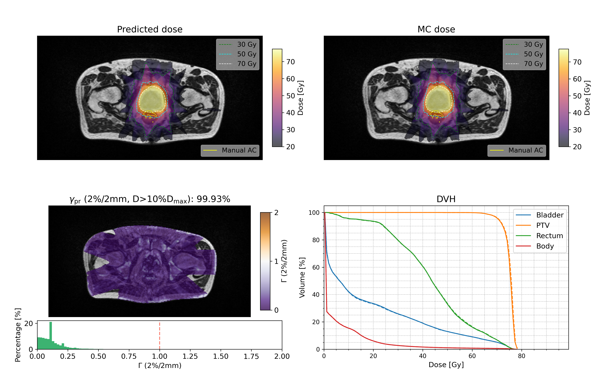
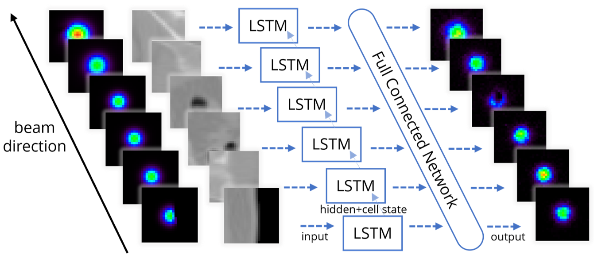
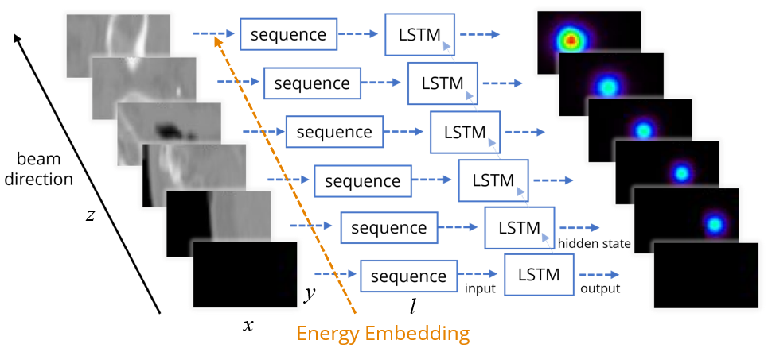

Research
- 
- 
- 
News
- Nov 2025 Published synthetic-CT-free dose calculation paper in Medical Physics
- Dec 2024 Published prompt gamma prediction paper in Physics in Medicine & Biology
- Sep 2023 Started PhD position at LMU Munich
Selected Talks
Academic Service
- Reviewer Medical Physics, Physics in Medicine & Biology, PhiRO
Awards
- 2022 Chinese National Scholarship